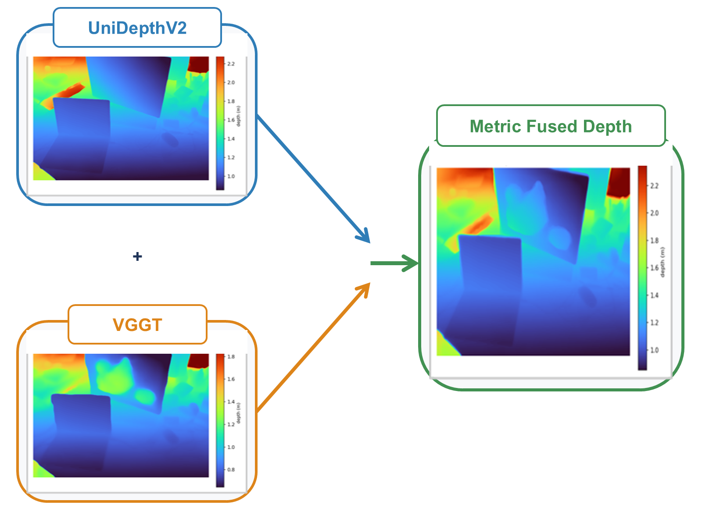
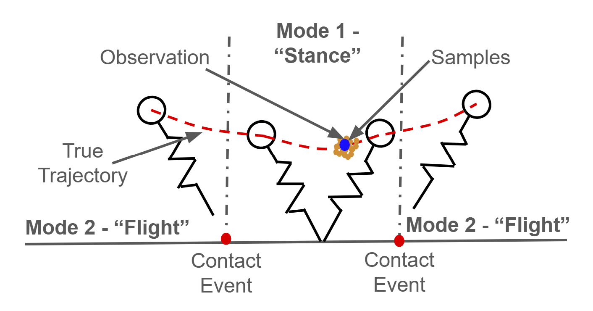
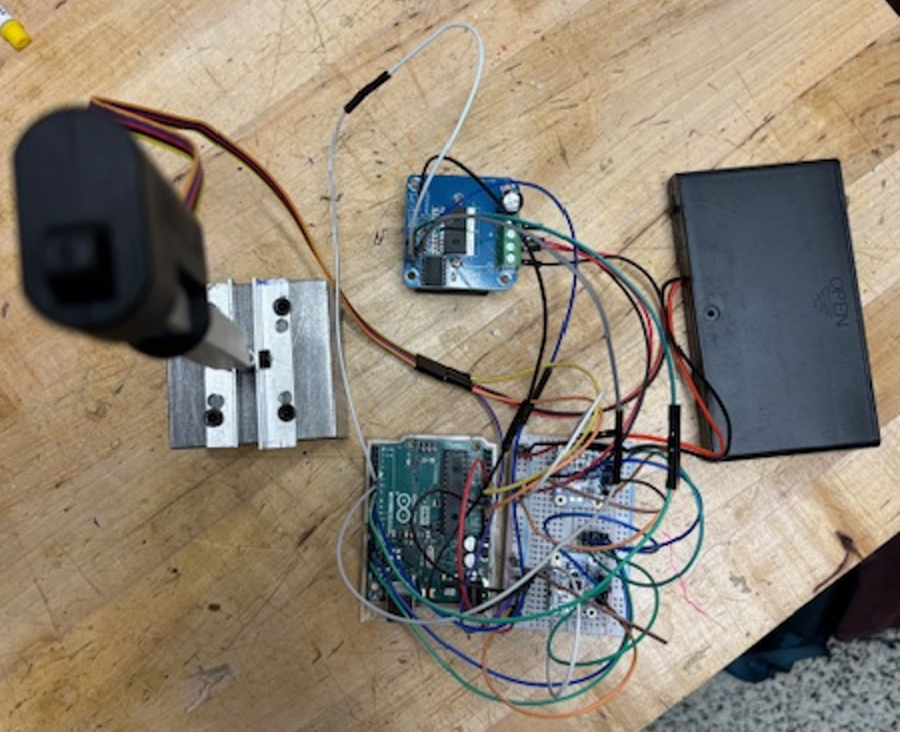
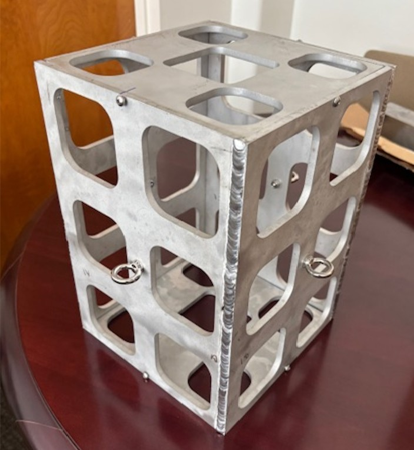

Publications
Conferences / Journals
S3: Semantic Scale Synthesis for Training-Free Metric Depth from Complementary Foundation Models in Monocular 3DGS SLAM
[paper]

CAST: Collision-Aware Assembly with Construction Robots using Simultaneous Trajectory Estimation and Planning
[paper]

Path Integral Particle Filtering for Hybrid Systems via Saltation Matrices
[paper]

Workshops
Learning Deformable Cable Geometry for Collision-Free Planning of Construction Robots
[paper]
Moving Mass Control for A Hypersonic Testbed
[poster]

